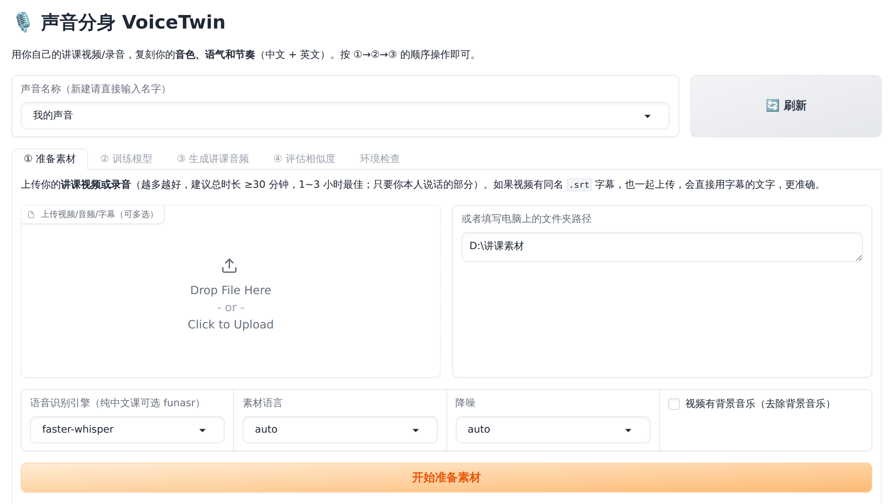

素材是决定"像不像"最重要的因素。程序会自动处理大部分问题，但放进去的素材越好，出来的声音越像你。这一章花 10 分钟读完，能少走很多弯路。
| ✅ 好素材 | ❌ 不好的素材 |
|---|---|
| 你本人正常讲课的状态，声音自然、有精神 | 嗓子哑了、感冒、疲惫状态下的录音 |
| 背景安静（普通房间、录音间） | 全程有背景音乐、空调轰鸣、键盘声很大 |
| 用麦克风录的原始音频（wav），或者画质正常的讲课视频 | 被多次压缩、声音发闷发虚的低质量视频 |
| 只有你一个人在说话 | 多人对话、访谈、大量学生发言 |
| 内容丰富：有陈述、有提问、有感叹，语气自然多样 | 全程念稿、语调平淡；或者全是喊口号式的激动语气 |
| 和你以后想生成的内容风格一致（例如都是讲课） | 风格完全不同（例如唱歌、配音、朗诵诗歌） |
| 素材总时长 | 效果 | 说明 |
|---|---|---|
| 不到 10 分钟 | 能用，但一般 | 音色大致像，语气和节奏不够稳定。程序会给出提示。 |
| 10~30 分钟 | 较好 | 音色比较像，大部分句子自然。 |
| 30 分钟~1 小时 | 好 | 音色、语气都明显更像，推荐的起点。 |
| 1~3 小时 | 最好 | 推荐。语气、节奏、口头习惯都能学到。 |
| 3 小时以上 | 和 3 小时差不多 | 继续增加收益变小，训练时间变长；优先保证质量而不是数量。 |
讲课素材，也就是 D:\讲课素材。| 视频 | mp4、mov、mkv、avi、flv、webm、wmv、m4v、ts、mts、3gp |
|---|---|
| 音频 | wav、mp3、m4a、aac、flac、ogg、opus、wma、amr |
第1课.mp4、第2课.mp4。D:\讲课素材
├── 第1课.mp4
├── 第1课.srt ← 有字幕的话，和视频同名放在一起（可选，见 4.5 节）
├── 第2课.mp4
├── 第3课.mp4
└── 英文课\
├── Lesson1.mp4
└── Lesson2.mp4
如果你的视频本来就有字幕文件（.srt 或 .vtt，比如以前用剪映自动生成并导出的字幕），请把它和视频放在一起，并且文件名相同：
第1课.mp4 + 第1课.srt ✅第1课.mp4 + 第1课.zh.srt ✅（也能识别）第1课.mp4 + 字幕1.srt ❌（名字不同，不会被使用）有字幕时，程序会直接用字幕里的文字和时间轴切分，比语音识别更准确，训练效果更好。没有字幕也完全没关系，程序会自动识别。
如果只是片头片尾有音乐，不用处理（程序会过滤掉）。如果全程都有背景音乐，建议先用 GPT-SoVITS 整合包自带的人声分离工具把人声提取出来：
正在启动声音分身，浏览器会自动打开 http://127.0.0.1:7860 ，使用期间请不要关闭本窗口…… 21:30:02 | 网页界面：http://127.0.0.1:7860 Running on local URL: http://127.0.0.1:7860
127.0.0.1:7860，按 Enter。
界面从上到下分为三部分：
| 位置 | 作用 |
|---|---|
| 最上面：声音名称 | 选择或新建一个"声音"。第一次使用时直接输入名字（例如"我的声音"）；以后点右边的小三角从列表里选。旁边的 🔄 刷新 用来刷新列表。所有标签页都使用这里选中的声音。 |
| 中间：五个标签页 |
① 准备素材 放入讲课视频，自动切分、识别、过滤（第 6、7 章） ② 训练模型 训练你的专属声音模型（第 8 章） ③ 生成讲课音频 粘贴讲稿，生成音频和字幕（第 9 章） ④ 评估相似度 给任意一段音频打分，看有多像你（第 12 章） 环境检查 检查显卡、模型等是否正常（与安装时的检查相同） |
| 下面：当前标签页的内容 | 各种输入框、按钮和运行日志。 |